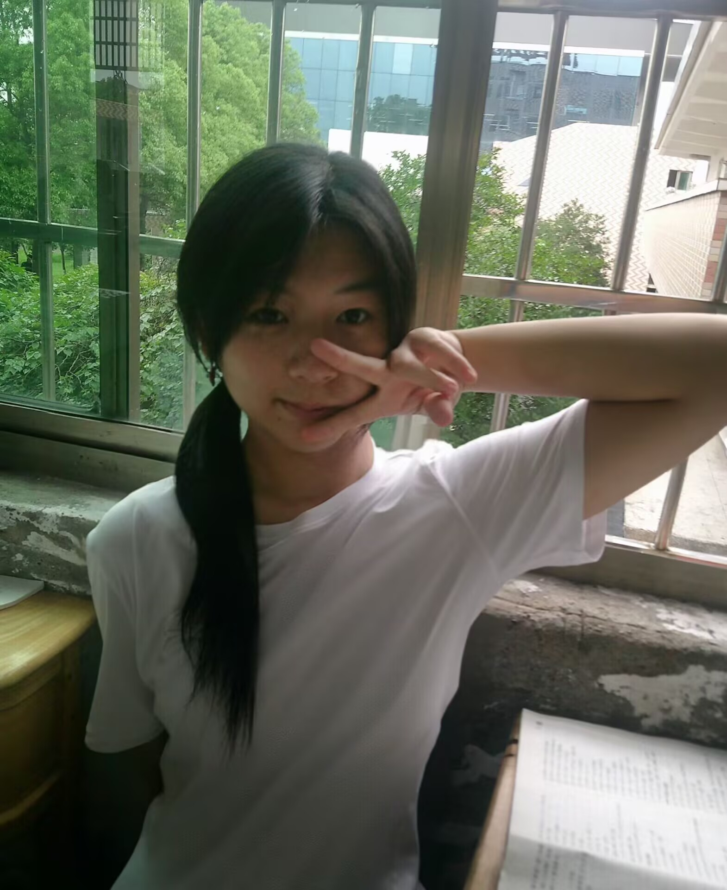
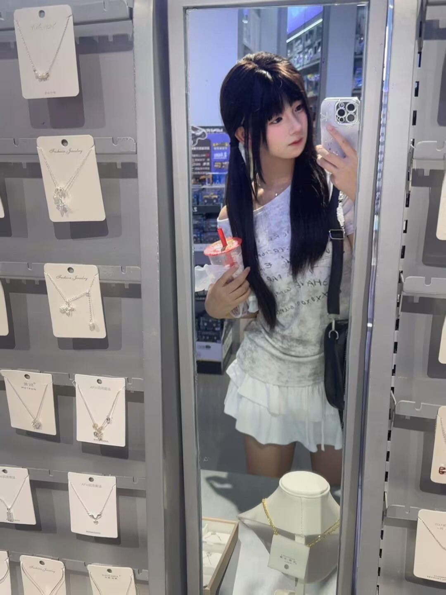
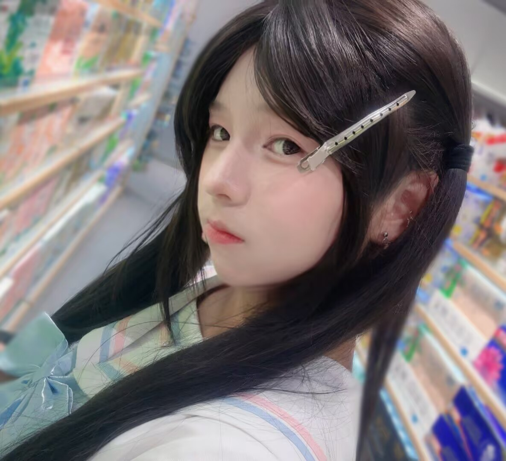
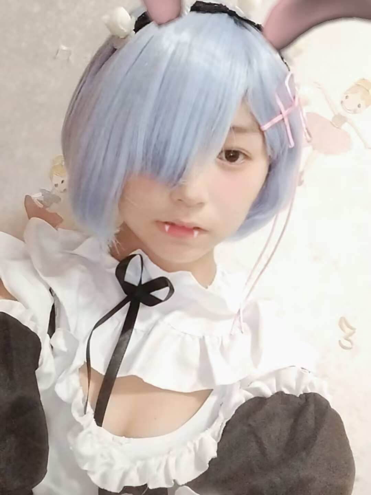
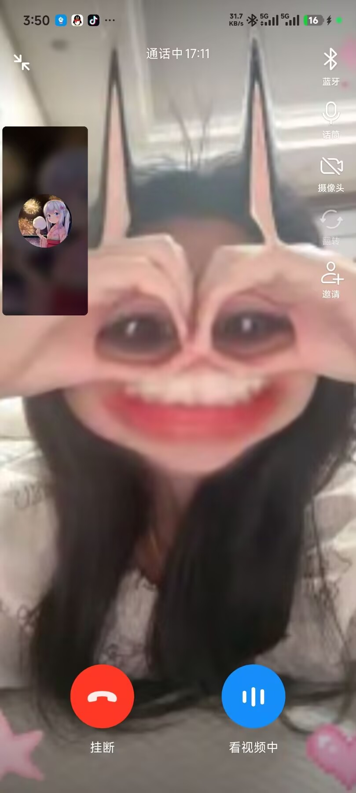

致 笨笨汤圆
我们的故事，从一条消息开始
✦
展信佳 ✦
其实想给你写这封信已经很久了。
第一次见到你的时候，你说"大哥哥我是汤圆"。当时以为和小汤圆只能是普通的网友，很快就会在列表里吃灰，结果没想到，现在已经小半年了，我们中间的聊天就没有断过，dy也有一百多天的火花了。
这五个月里，你从叫"雾夜明大哥哥"变成了叫我"乐乐"。我也从叫你"汤圆"变成了叫你——笨笨。
🏫 学校里的汤圆

📷🌸 日常里可爱的汤圆

📷
📷🎭 汤圆的第一次 Cos

📷第一次 Cos 是自己一个人，第二次就要和我一起啦 ✨
😝 在我面前沙雕卖萌的汤圆

📷只有在我面前才会这样放飞自我的小笨蛋
"我只和汤圆一个人续火花哦"
—— 从3月4日开始，从未断过 🔥
小汤圆：
展信佳。
其实想给你写这封信已经很久了，但当真的拿起笔的时候，又不知道从哪说起。
第一次见到你的时候，你说"大哥哥我是汤圆"。当时以为和小汤圆只能是普通的网友，很快就会在列表里吃灰，结果没想到，现在已经小半年了，我们中间的聊天就没有断过，dy也有一百多天的火花了。
这五个月里，你从叫"雾夜明大哥哥"变成了叫我"乐乐"、叫我"臭乐乐"、叫我"猪猪"。我也从叫你"汤圆"变成了叫你"笨笨"、叫你"小笨笨"、叫你"小笨蛋"——嗯，虽然你总说自己很聪明啦。
你总说自己拍照丑、说自己找不到优点——但每次你发照片过来，我都在想：这个笨蛋明明很好看啊，怎么老觉得自己不好看。你p图的技术越来越好了，发给我的照片我都存着呢。
还有你发给我的语音，半夜唱的那首奇怪的歌，我到现在还留着。
还记得当时不小心被你把礼物猜出来的时候，你说"超过一百的礼物我不收"的时候吗？我当时想，这小汤圆怎么这么懂事的，搞得我都不知道送你什么好了。我想了很久才决定送你这个手表——没什么花里胡哨的，就是很实用。等你上高中了，上课的时候抬手就能看到时间。我希望每次你看时间的时候，都能想起有个人在惦记着你。这就是我送手表的意义。
还有那条项链。我知道你之前和那个朋友的事情——那条项链你还一直戴着，即使闹掰了也没摘下来过。我问你为什么还戴着的时候，你说你是为了怀念，但我知道，那是因为你在乎那段回忆吧。我希望汤圆能每天都开心，所以我想着，以后就由我来陪着小汤圆吧。
你不知道吧，每次你说"来打粥"的时候，我在游戏里都想多照顾你一点。给你多分点装备，帮你挡挡枪，看到你被人打了我比你还急。不过可能很多时候太急了导致语气不太好，抱歉啦小汤圆。
所以我想着，要不就做点什么东西，把你我的点点滴滴都装进去。
你发给我的每一张照片、每一条语音、每一句"乐乐"、每一次续火花的提醒——我都记得。那些因为你晚睡而担心的夜晚，那些因为和你打游戏快乐的夜晚，还有知道你要来长沙之后激动得翻来覆去的夜晚——我都记得。
你说你"很容易被感动，很玻璃心，有人说你你会很难过，自己躲起来消化"——放心吧，有我在，我不会让别人说你的。谁要是让你难过了，你跟我说，我去找他。
你总说你很凶——好吧，你确实很凶："你这个臭大学生不准给我买贵的礼物不然我就哈气"，"我不要和你玩了"。但你也很可爱，会在晚上说"本公主要去洗澡澡了"，会说"晚安安喵"，会在生气之后主动跑来道歉说"对不起，是我自己的问题"。这样的汤圆真的很可爱。
虽然汤圆还只是一个准高中生，但你比我认识的很多人都要懂事、要成熟。
还有，虽然我整天叫你笨笨汤圆——但其实你一点都不笨哦。会做蛋挞，会拍照，懂穿搭，p图也是全程自己研究出来的，已经完胜百分之九十的人了好不好。
我知道这次中考没能如愿去一中，去了四中可能会有点失落吧。但其实仔细想想——谁说不一定是因祸得福呢？我高考不就没考好嘛，结果到了怀化学院，然后阴差阳错在网上认识了你。如果没有那次考砸，我可能根本不会遇到那个叫我"大哥哥"的小汤圆。所以你别太沮丧哦，说不定你在四中也能收获非常不得了的东西呢——比一中还厉害的那种。
马上就要在长沙见面了。说真的，我有点紧张——见面的时候你会不会嫌弃我啊？我比你想象中要笨一点，比聊天里要不会说话一点，但那颗想对你好好的心，是真的。
这个网站，就当是我给你的回信吧。你说你写了一封超长的信给我，那我也做一个东西给你——只不过用的是代码，不是纸和笔。
希望你喜欢。
对了，以后想打粥了随时喊我。
想续火花了也随时喊我。
不开心了更要喊我。
我永远会陪着你的，
我不准我的笨笨汤圆出事哦。
还记得我们最开始的约定吗？
我们三年之内绝对不会绝交，
我会静静的等着汤圆，
在三年高中之后和我继续续约。
—— 你的乐乐
2026年7月
我不准我的笨笨汤圆出事哦
以后想打粥了随时喊我
想续火花了也随时喊我
不开心了更要喊我
还记得我们最开始的约定吗？
我们三年之内绝对不会绝交
我会静静的等着汤圆，
在三年高中之后和我继续续约
🌙 永远陪着你的，乐乐
愿我们的友谊长存